THE ROAD NOT TAKEN
'...Two roads diverged in a wood, and I - I took the one less traveled by, And that has made all the difference.'
BY: Chen Qian, Elena Benedetti, Nadia Zubair Khaleel, Ting Jiang
Master: LANDSCAPE ARCHITECTURE - LAND LANDSCAPE HERITAGE /
Professors: Matteo Poli, Paolo Bozzuto, Marco Mancini /
Students: Chen Qian, Elena Benedetti, Nadia Zubair Khaleel, Ting Jiang /
Project Location: Teglio / Sondrio / Lombardy /
Show on Google Maps
09.2022 - 01.2023 /
Published on January 26, 2023
Strategy
The design strategy is based on an analysis of the site's elevation, slope and landscape elements, identifying sites suitable for different activities and adding features to enrich the experience of local residents and visitors.
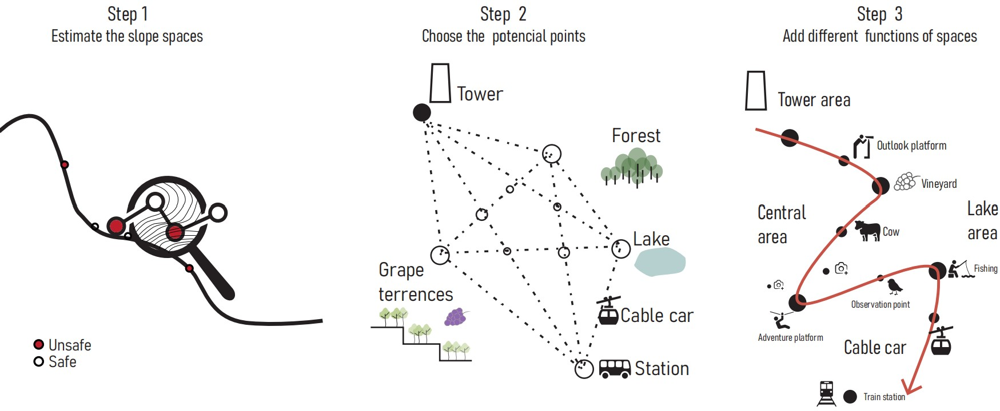
Master project
Master plan
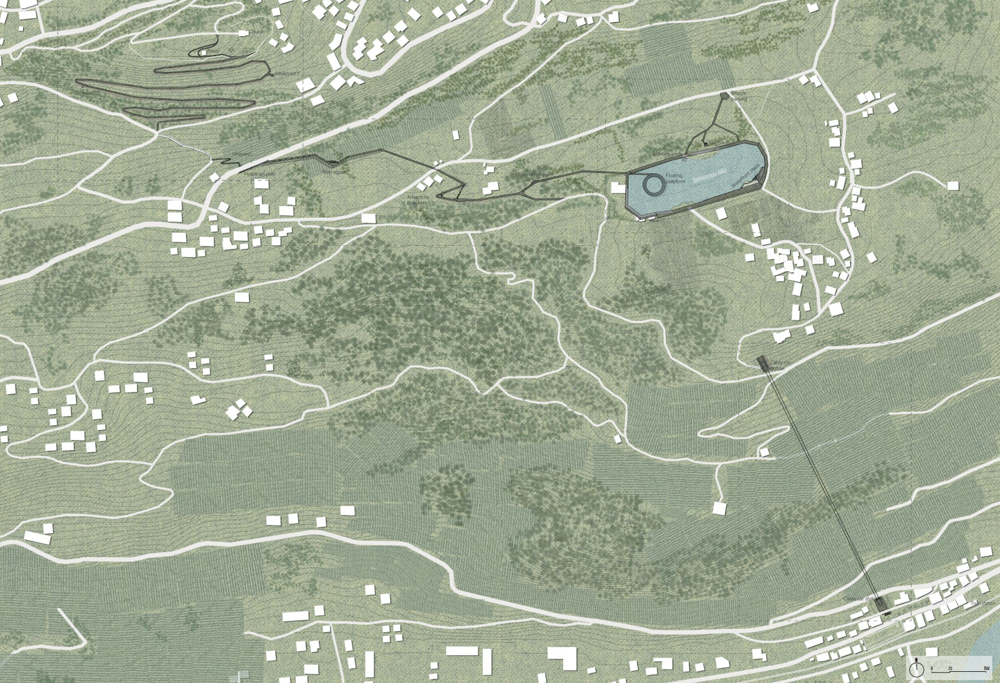
Master section and bird view

Axon
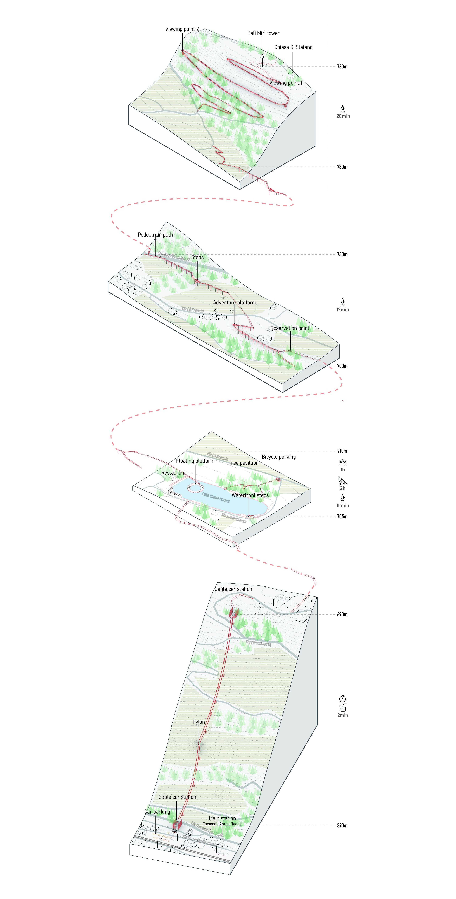
Story line (scroll to see!)

Cable car
Our main idea is to create an approach for the locals and the tourists. The proposal starts with the cable car bottom station which is located alongside the main road giving it direct connectivity with the Tresenda-Aprica Train Station. It takes around only 2 minutes to reach the top station saving plenty of time of the users.
Cable car station plan
 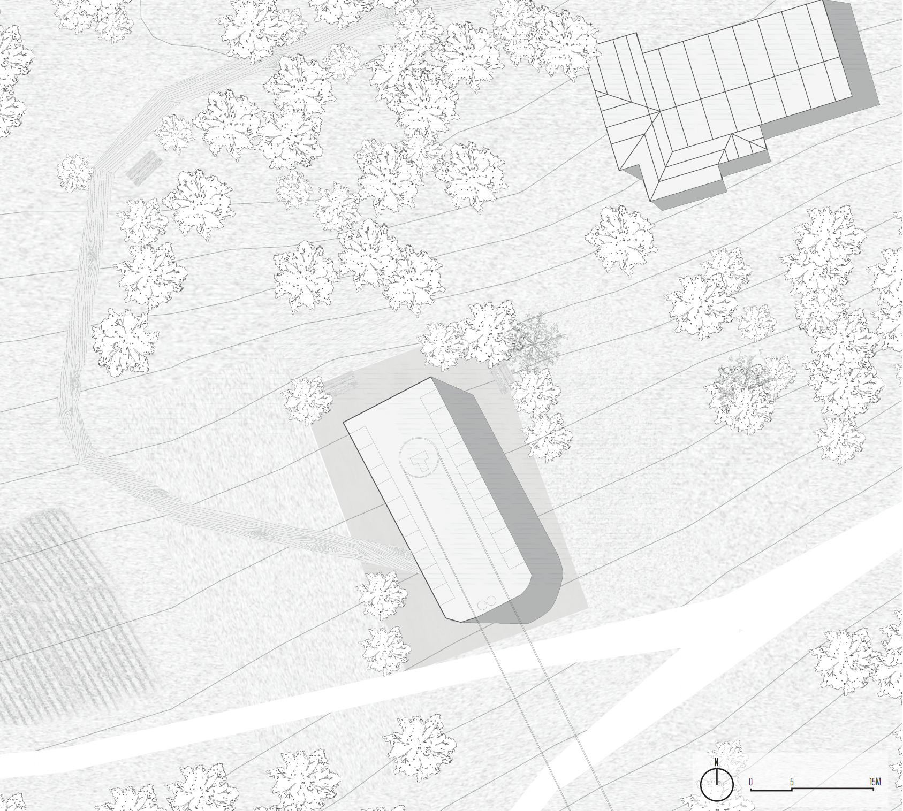
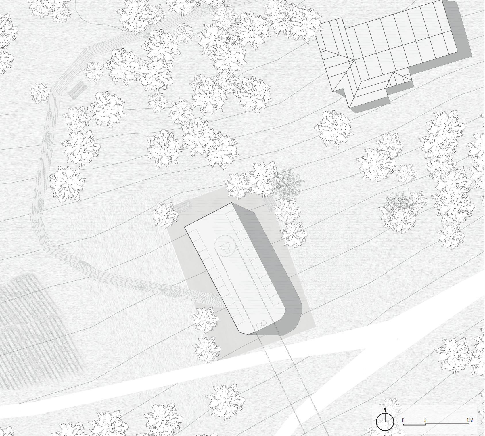
Cable car section
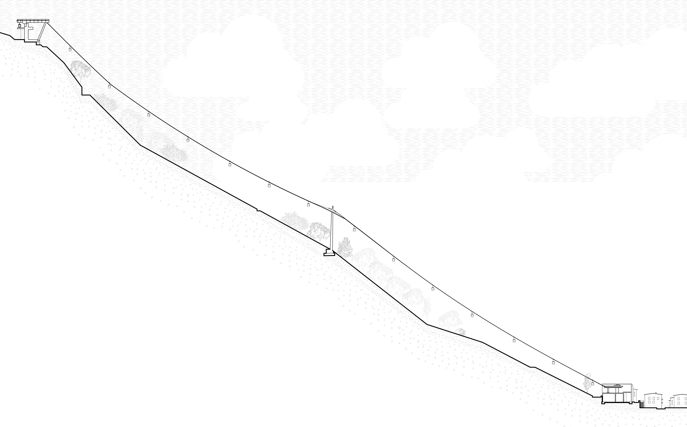
Lake Somasassa area
After reaching the Top station, the journey continues on foot until the next stop of Lake Somasassa arrives. The lake consists of a floating platform, tree pavilion, waterfront steps, sightseeing deck and restaurants. The nearby bicycle parking makes its easier for the cyclists to use the lake and the pathways. The lake then connects to the central part which takes around 12 minutes to reach to the tower portion.
Lake area plan

Lake area section
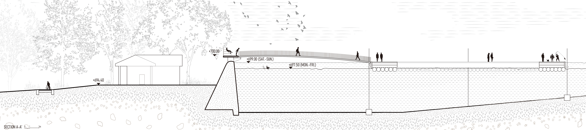

Central area
The central part is full of adventurous and observation points while creating some resting spaces on the way. On the other hand, the tower part is solely devoted to sightseeing and easy access. It takes around 20 minutes to reach the Bell tower which is the main landmark of Teglio.
In total the journey takes around 44 minutes making it quicker than the initial way.
Central area plan

central area section
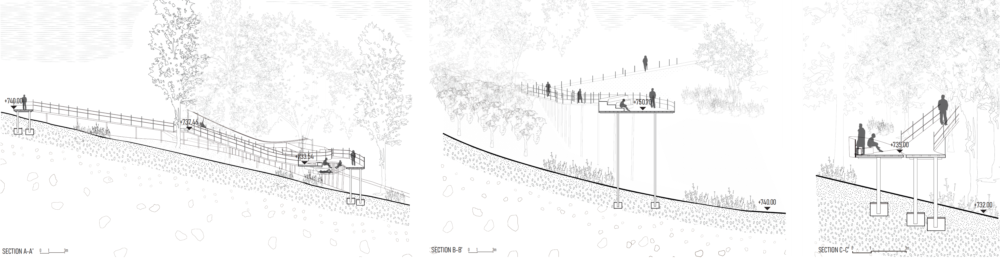
Tower area
Tower area plan
 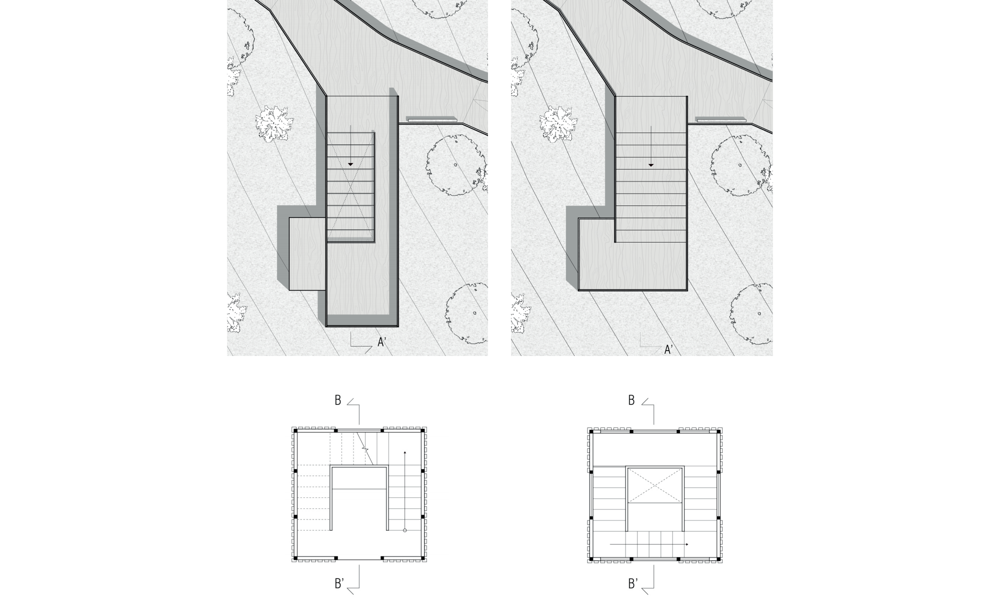
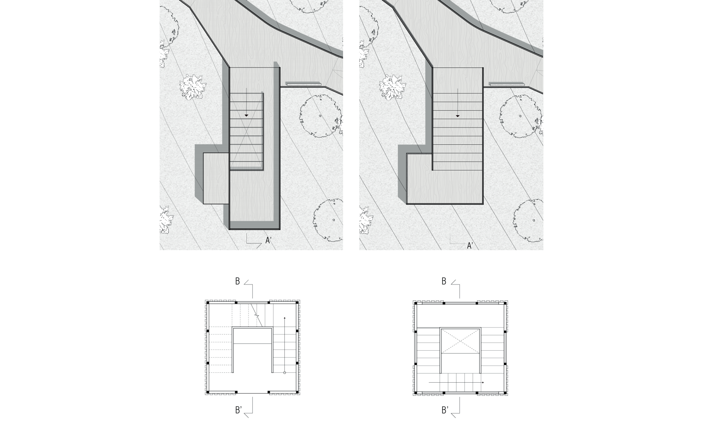
Tower area section
 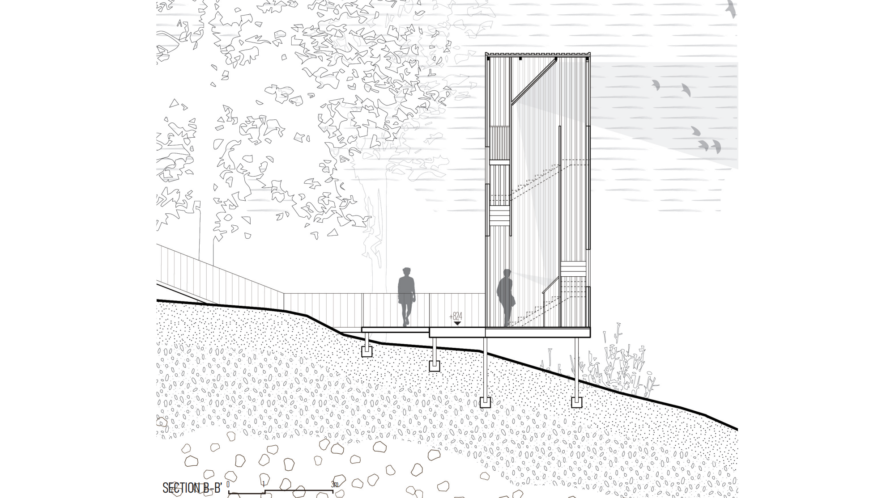
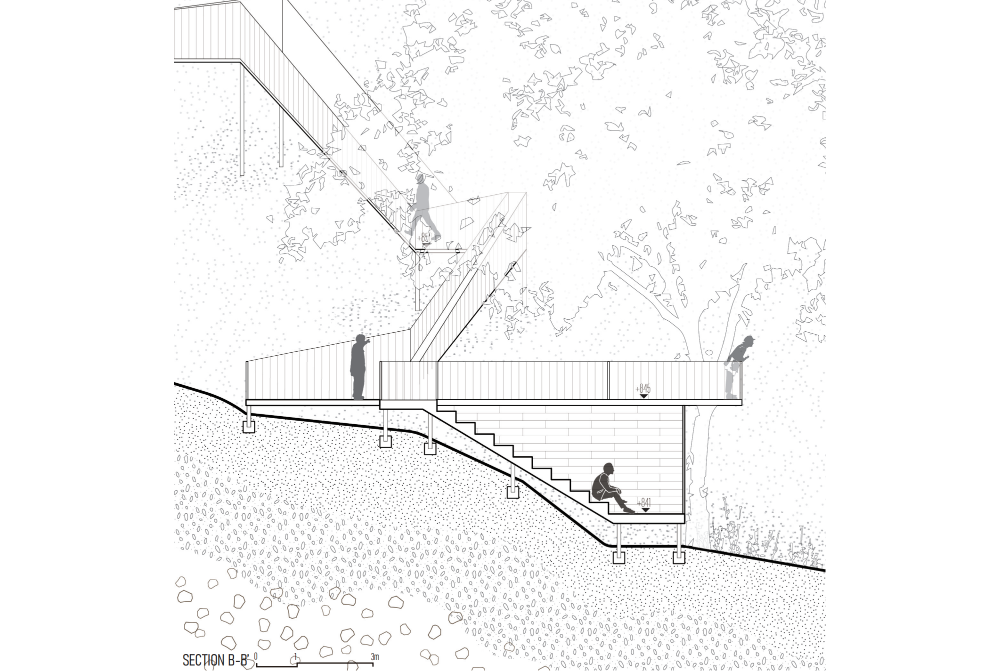
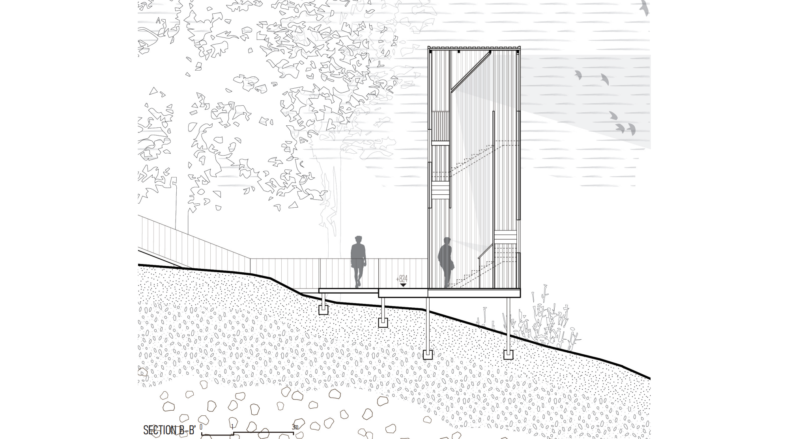
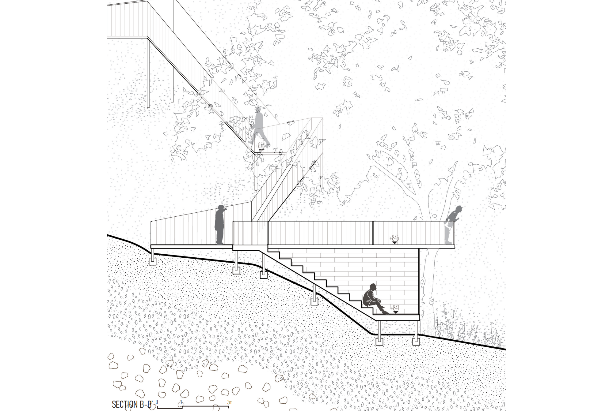
Tower area elevation
 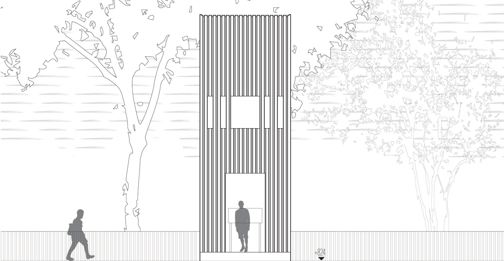
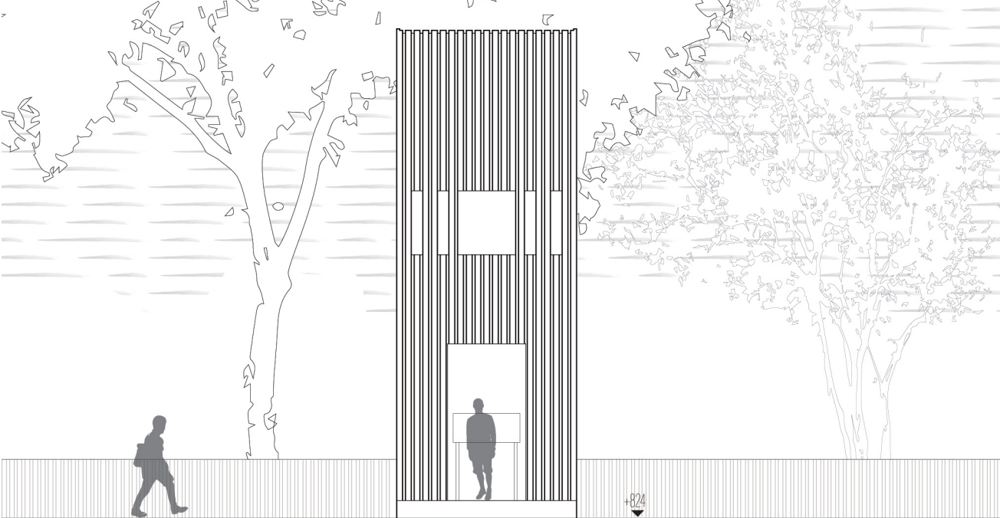
Conclusion
With our proposal we were able to achieve the aim of creating a leisure pathway which not only saves time, but also give its users some adventurous and worth remembering experience. The pathway being all ramped makes it accessible to all kind of users and ages.
Our project of ‘THE ROAD NOT TAKEN’ thus enables you to take the road not taken.